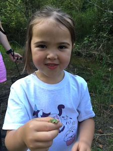

Sadie Parker is an Environmental Biology major and Mathematics minor and plays soccer for Pacific. She's working on landscape genetics of local red-legged frogs for her senior capstone.

Owen Fortney is a junior Biology major. He's studying the effects of land use on genetic diversity and connectivity in the rough-skinned newt.

Margaux is free child labor. In addition to loving frogs and salamanders, she likes unicorns, cupcakes, and sprinkles.
Recent lab alums

Nolan Endicott, Tom Nguyen, and Giang Nguyen - 2017
Elsie Gibson
Harvey Mudd, 2015
Harvey Mudd, 2015

Josephine Moberg
Pitzer College, 2017
Pitzer College, 2017

Devin Cavero
Claremont McKenna
Claremont McKenna

Tali Caspi
Scripps College
Scripps College
Stephen Johnson
Pitzer College
Pitzer College
Alex Mauro
Claremont McKenna, 2015
Claremont McKenna, 2015